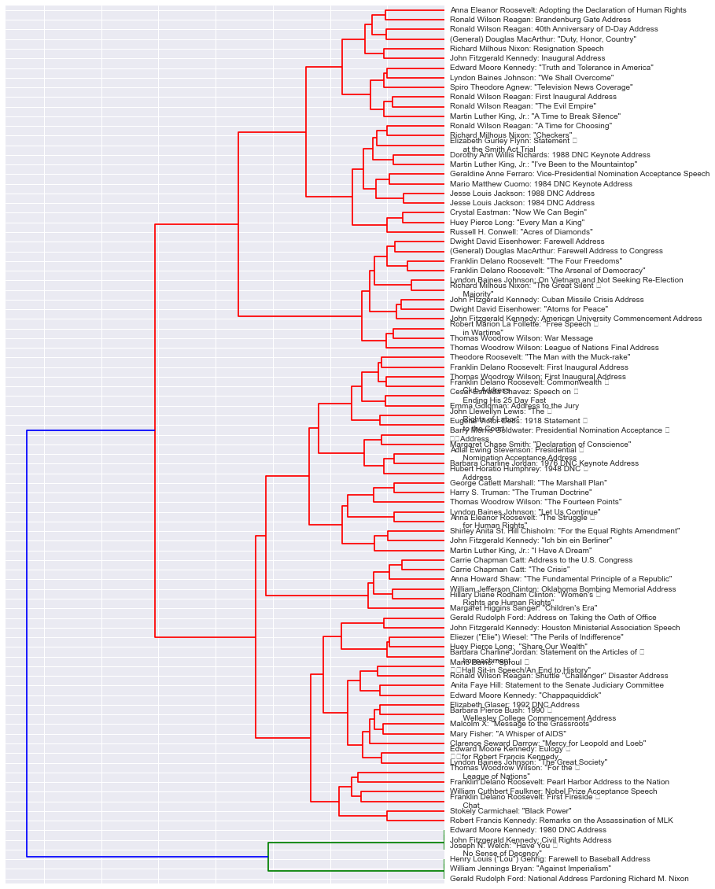
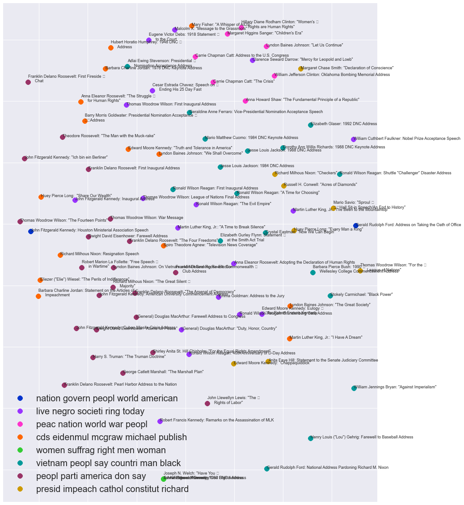

In order to get transcripts of famous speeches, I used Python's BeautifulSoup to scrape AmericanRhetoric.com. The primary webpage contained links to sub-pages, with each sub-page containing the transcript of a single speech.
After creating a corpus of all of the speech transcripts, I created a bag-of-words representation of the text, with word stemming, stop word filtering, and term frequency - inverse document frequency (TF-IDF). Each speech could then be represented as a vector, with each element representing the frequency of a particular word stem. I then calculated the distances between all pairs of speeches (using cosine similarity), and used those distances for Ward's method for hierarchical clustering, resulting in the following dendogram plot.
We can see that there are about 3 relatively large primary clusters (in red) and 1 very tiny primary cluster (in green). If we look closely at the low-level clusters, we see some intuitive patterns and some not-so-intuitive patterns. For example, William Jefferson Clinton (i.e. Bill Clinton) and Hillary Diane Rodham Clinton are paired closely together, despite their seemingly different speech topics (Bill's speech is called Oklahoma Bombing Memorial Address, while Hillary's is Women's Rights are Human Rights). J.F.K.'s Cuban Missile Crisis Address is paired up with Dwight D. Eisenhouwer's Atoms for Peace. Interestingly, the closest speech to Martin Luther King, Jr.'s amazing and powerful I have a Dream is J.F.K.'s Ich bin ein Berliner. Admittedly, I do not actually know the content of J.F.K.'s speech - only the anecdote that the title actually translates something to I am a jelly-filled donut - however, I am now very curious to read the transcript, and see if it is as inspiring and powerful as I have a Dream.
Another way to group the speeches is by using k-means clustering, which is quite good for sparse and unstructured data. One of the parameters for scikit-learn's k-means clustering algorithm is the number of clusters - I somewhat randomly chose 8 clusters, but with more time and further refining of the project, I would definitely experiment with other cluster numbers. The following figure shows the different speeches, colored by which cluster they belong to. The top 5 words that are nearest to each cluster's centroid are also given, at the bottom left. Additionally, the x,y-coordinates of each speech are the result of multi-dimensional scaling (MDS), which allows one to represent the distance matrix with a lower-dimensional form whilst still somewhat preserving the distances in the original high-dimensional space.
The most interesting thing about this plot, other than the fact that k-means clustering gives quite different results than Ward's method, is the top 5 words for each cluster. Note that the top 5 words are in their stemmed form, thus showing up as "peac" rather than "peace". We can see some cool patterns here. For example, the 2nd cluster has "live, negro, societi, ring, today". In that cluster are: J.F.K.'s Inaugural Address, MLK Jr.'s I've been to the Mountaintop, Gen. Douglas MacArthur's Duty, Honor, Country, Clarence Seward Darrow's Mercy for Leopold and Loeb (a speech that spanned 3 days!), anarchist Emma Goldman's Address to the Jury, Cesar Estrada Chavez's Speech on Ending His 25 Day Fast, and more (18 speeches in total). The specifics of these speeches seem relatively disparate, but it seems as if they all deal with justice, society, etc.
